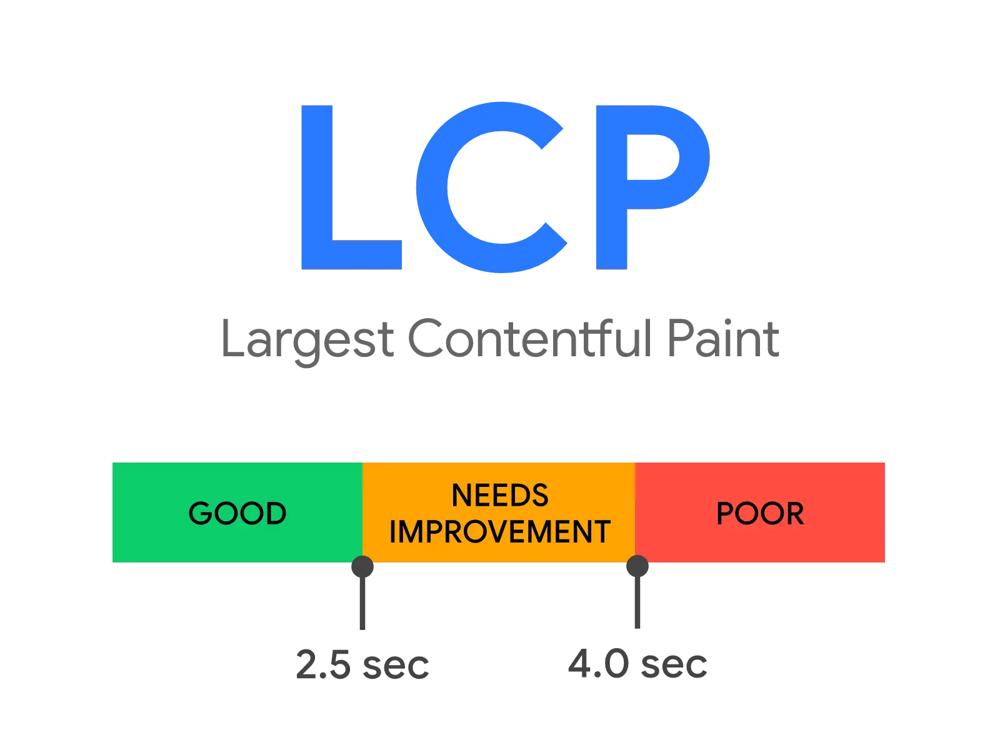

Short answer
Largest Contentful Paint measures when the largest text or image in the viewport has finished painting.
On a product page that is often the hero photograph or the main heading block. The public definition groups experiences into ranges so teams can talk about loading without inventing a score for a whole domain. Mika Visibility treats this as an SEO Health observation about the live page, not as SEO Growth and not as GEO.
Definition
Largest Contentful Paint, usually shortened to LCP, is one of the three Core Web Vitals loading and experience definitions. It watches the viewport, not the entire document. A large footer image that never enters the first screen does not set LCP. A late-loading hero does. The element can change during load: a heading may be largest at first, then a product photo replaces it. The metric follows the largest element that has painted by the time the page settles.
What the diagram is showing
The chart on this page restates the published ranges used to describe LCP: a faster range, a middle range, and a slower range. Those ranges are definitions of the metric. They are not a measurement of Mika, of a customer, or of this marketing site. Field data and lab traces can disagree because one watches real visits and the other watches a scripted run. An SEO Health pass can note which template is slow to paint its largest element and attach a sample URL. It does not turn that note into a rank.

What to check
- Which element is largest in the first viewport on the product template
- Whether that element is an image, a heading, or a background that arrives late
- Whether the HTML response already names the hero, or the hero appears only after script
- Whether lab traces and field descriptions are being mixed into one number
- A sample URL recorded beside the finding
A practical example
A components catalog paints the company name quickly, then waits on a multi-megabyte product render before the main photograph appears. The largest element is that photograph, so LCP is waiting on the image, not on the navigation. The useful health note is the template and the asset, plus one sample URL. Writing more brochure copy does not move that paint.
What this does not claim
A faster LCP does not guarantee rankings, indexation, or AI answer citations. Publishing the range chart is not a claim that any page on the web sits in a given band. Mika does not guarantee a Core Web Vitals outcome.
Where Mika Visibility files this
Mika Visibility keeps SEO Health separate from SEO Growth, and both separate from GEO Health and GEO Growth. LCP belongs with technical readiness of the live page. Unanswered buyer questions remain a different track. A re-audit after the hero is fixed is how a team checks that the template changed. The audit does not invent a blended overall score.
FAQ
What does Largest Contentful Paint measure?
Largest Contentful Paint measures when the largest text or image in the viewport has finished painting.
Does a good LCP range mean the page will rank?
A faster LCP does not guarantee rankings, indexation, or AI answer citations.
Is the chart on this page a score for a real site?
They are not a measurement of Mika, of a customer, or of this marketing site.
Next step
Run a structured SEO + GEO audit to see health findings, growth gaps, and a blueprint you can act on.
Clearer entities, answers, evidence, and context make pages easier to understand and reference. Results in any answer product are not guaranteed.